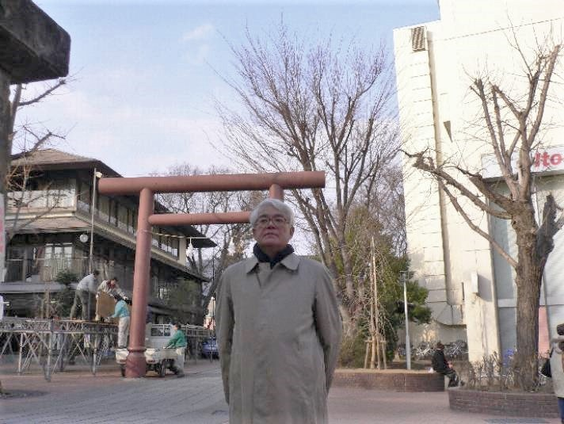

url:http://std.int-univ.com/~r060002/CGI/index.html
url: http://www18.ocn.ne.jp/~tamiya/index.html
近 況

2007/9/26 戸隠神社にて
2007/4/21
信州大大学院師玉研(情報工学)でガイダンスのまえに、若里公園で

2007/1/25
信州大工学部大学院入試の後、長野市権堂の秋葉神社のまえで

2006/9/26 高麗川の巾着田で
若い時 ->1, 2, 3, 4, 5, 6
それ以降（Ｍｉｚａｒ） ->A, B, C, D, E , F
いずれもPDFファイルです。